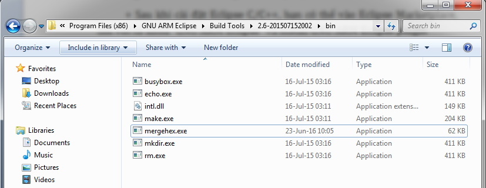
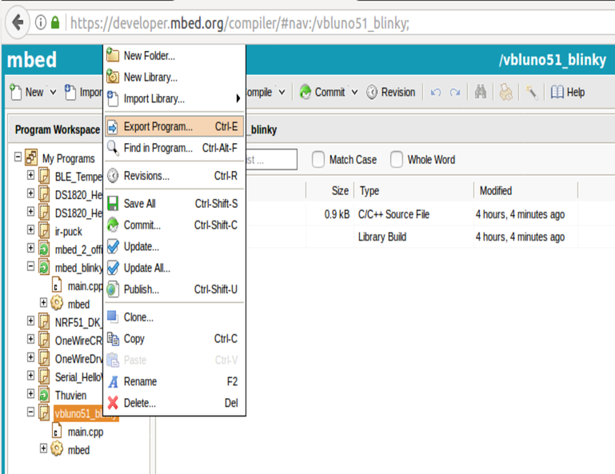
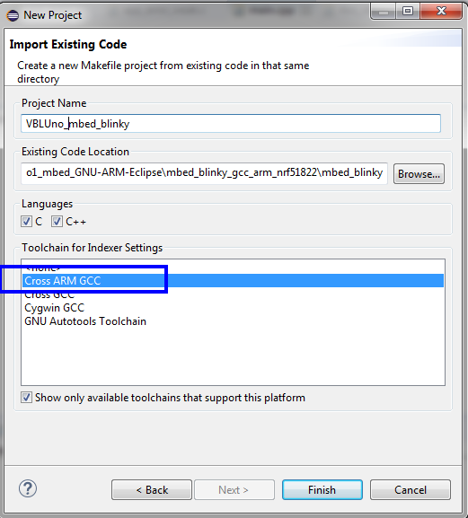
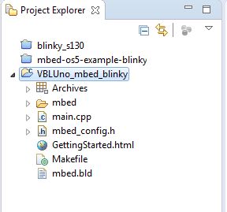
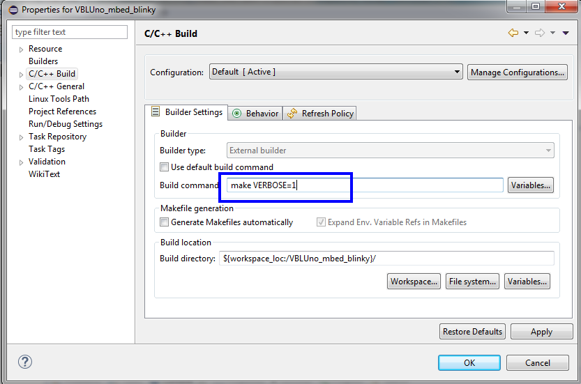
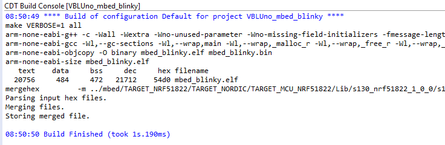

PHẦN 1: CÀI ĐẶT MÔI TRƯỜNG
Nhằm nâng cao hiệu suất làm việc của developers, việc sử dụng các môi trường phát triển (IDE) là điều cần thiết. Để phát triển các ứng dụng nhúng cho IoT, cụ thể là phát triển ứng dụng với bo mạch VBLUno51 (và các phiên bản khác) của VNGIoTLab, chúng tôi đề xuất phương án sử dụng môi trường sau:
- Phần mềm (hoàn toàn miễn phí)
- Compiler: GCC ARM Embedded
- IDE: Eclipse C/C++ với GNU ARM Eclipse plugin
- Build Tools: Chỉ cần cài đặt nếu sử dụng Windows OS
- Flash và Debug: pyOCD hoặc OpenOCD
- Phần cứng:
- Bo mạch VBLUno51 của VNGIoTLab (tương đương VBLUno v1 + CMSIS-DAP)
Các bước cài đặt khá đơn giản, bạn thực hiện theo hướng dẫn dưới đây:
Bước 1: Cài đặt GNU ARM Toolchain
http://gnuarmeclipse.github.io/toolchain/install/
Bước 2: Cài đặt Eclipse C/C++
http://www.eclipse.org/downloads/?
Bước 3: GNU ARM Eclipse plugin
-
Đây là plugin cho phép sử dụng Eclipse IDE để phát triển ứng dụng cho các dòng vi điều khiển ARM với trình biên dịch GCC_ARM. So với việc chỉ sử dụng các command, sử dụng Eclipse cho phép bạn có thể lập trình, biên dịch và gỡ lỗi trên môi trường GUI rất tiện lợi cho các developers.
-
Sau khi cài đặt Eclipse C/C++, bạn có thể vào Eclipse Marketplace, tìm với từ khóa “GNU ARM Eclipse” và install GNU ARM Eclipse plugin

- Tham khảo thêm tại http://gnuarmeclipse.github.io/
Bước 4: Cài đặt GNU ARM Eclipse Windows Build Tool (Chỉ dành cho Windows OS)
-
http://gnuarmeclipse.github.io/windows-build-tools/
-
Sau khi cài đặt, không quên set path hệ thống cho thư mục vừa cài đặt. Ví dụ: “C:\Program Files (x86)\GNU ARM Eclipse\Build Tools\2.6-201507152002\bin”
-
Vào thư mục trên, copy “busybox.exe” và đổi tên thành “mkdir.exe”
Bước 5: Cài đặt công cụ để merge các file hex cùng nhau
-
Linux: cài đặt
srec_cat -
Windows:
Sử dụng mergehex.exe . Bạn có thể download tại ĐÂY
Copy mergehex.exe vào chung thư mục “…GNU ARM Eclipse\Build Tools\2.6-201507152002\bin”

PHẦN 2: XÂY DỰNG MỘT PROJECT
- Project sau đây sử dụng:
- Bo mạch VBLUno51 của VNGIoTLab (MCU: Nordic nRF51822 (Cortex-M0))
- Toolchain: GCC ARM Embedded.
- IDE: Eclipse với GNU ARM Eclipse plugin.
- Project đơn giản: Nháy led và truyền thông UART, sử dụng mbed-OS
Bước 1: Export project về máy tính
-
Có nhiều cách để tạo một project sử dụng mbed-OS cho các phiên bản mạch VBLUno, bài hướng dẫn này chọn cách đơn giản là export một project mẫu trên mbed Online Compiler về máy tính. Bản chất của việc làm này là nhờ mbed Online Compiler tạo cho chúng ta một Project với những file cần thiết và Makefile có sẵn, phù hợp với nRF51822.
-
Truy cập vào mbed Online Compiler, export project đã làm trong tutorial sử dụng mbed online compiler về máy tính, lựa chọn toolchain là GCC (ARM Embedded)


Bước 2: Tạo project với Eclipse
-
Chọn File -> New -> Project
-
C/C++ -> Makefile Project with Existing Code



Bước 3: Cấu hình cho project
-
Nhấp chuột phải tại project -> chọn Properties
-
Tại mục C/C++ Build, chọn thẻ Builder Settings, sửa build command

Bước 4: Build project
- Chúng ta không cần tạo mới Makefile, do đã sử dụng makefile nhận được bởi việc export project từ mbed Online Compiler. Chỉnh sửa lại Makefile như sau:
- Thêm các dòng sau:
SOFTDEVICE = ../mbed/TARGET_NRF51_DK/TARGET_NORDIC/TARGET_NRF5/TARGET_MCU_NRF51822_UNIFIED/sdk/softdevice/s130/hex/s130_nrf51_2.0.0_softdevice.hex
# For Debug or NoDebug
ifeq ($(DEBUG), 1)
C_FLAGS += -DDEBUG -O0 -g3
CXX_FLAGS += -DDEBUG -O0 -g3
else
C_FLAGS += -DNDEBUG -Os
CXX_FLAGS += -DNDEBUG -Os
endif
- Chỉ dành cho máy tính sử dụng HĐH Windows:
Sửa dòng "$(SREC_CAT) ../mbed/TARGET_NRF51_DK............." thành
mergehex -m $(SOFTDEVICE) $(PROJECT).hex -o combined.hex
-
Nhấp chuột phải tại project -> chọn Build Project
-
Nếu thành công, kết quả biên dịch như hình dưới

Bước 5: Nạp file thực thi xuống mạch VBLUno51
Chúng ta cần chú ý 2 file thực thi có phần mở rộng (*.hex) trong thư mục .build
-
mbed_blinky.hex: Chỉ là file thực thi chứa
Application, không gồmSoft Device -
combined.hex: Gồm
Soft DevicevàApplication

Để chắc chắn, chúng ta nạp file combined.hex xuống mạch VBLUno bằng cách copy file này vào phân vùng ổ cứng DAPLINK.
Ghi chú: Hướng dẫn sử dụng pyOCD và OpenOCD để debug sẽ được trình bày trong mục Loạt bài hướng dẫn
Download
- Có thể download mã nguồn tại ĐÂY